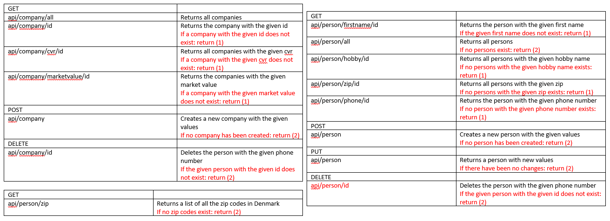
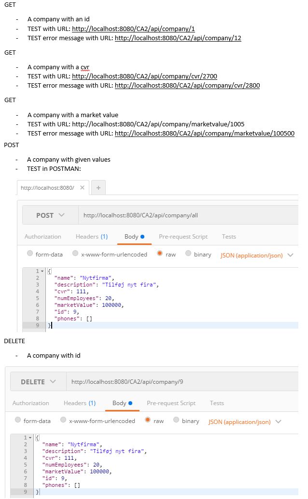
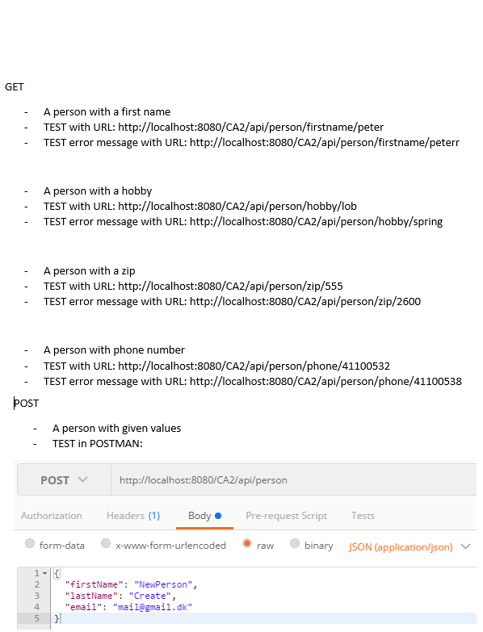

REST API

Test strategies and results

There are two different kinds of tests, a set of Facade/api tests and a set of rest assured tests.
Api test are automated, so when the program is build, we test to make sure the program doesn’t have any major errors in the current version.
The rest assured tests test if the websites give the right information out in json. Rest assured demands that the webserver is running to test,
so we can there for not test it without building first.
how to test with rest assured
We have used rest assured to make sure rest methods don’t give errors, and return the values we expect.
To use rest assured one needs to have the program running in the program and then uncomment the rest assured test and run them.
Complete description og Company API and how to test with POSTMAN


Studypoints
Emilie Nielsen
Entity class, Peristence Unit, Inheritence, person rest class, web pages, person facade, java script
giv fuld study points
Louise Nielsen
Entity class, Peristence Unit, Test data, company rest class, exception handling, documentation
giv fuld study points
Peter Lange
Inheritence, person rest class, person facade, test data
giv fuld study points
Emil Christoffersen
Company rest class, Company facade, unit test, rest assured
giv fuld study points
INHERITANCE - STRATEGY
We have used inheritance so that our Company class and our Person class
can have the same relationships to the same objects. If we haven’t done it with inheritance,
then it would be necessary for example Address to have an id referring to Company
and an another id referring to Person. Now, it is only necessary to have one id
referring to both of them at the same time.